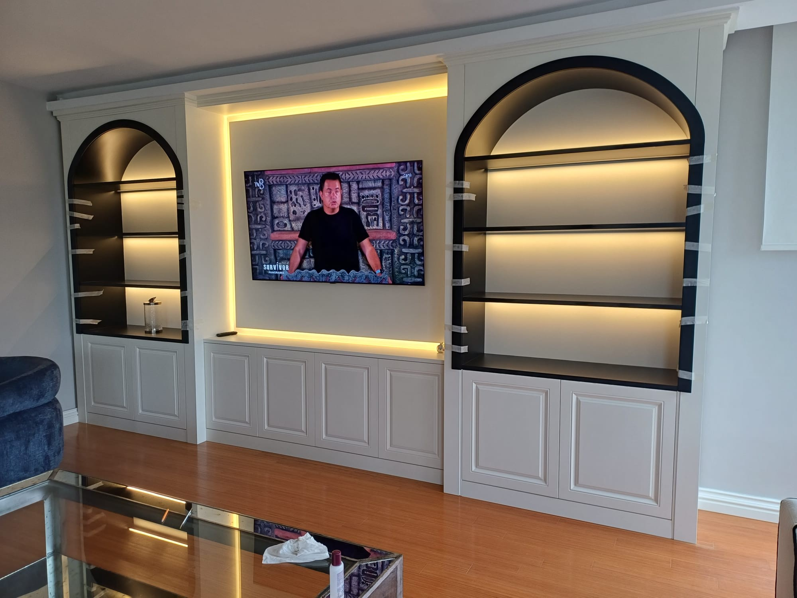
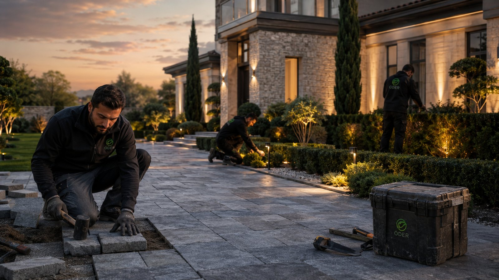
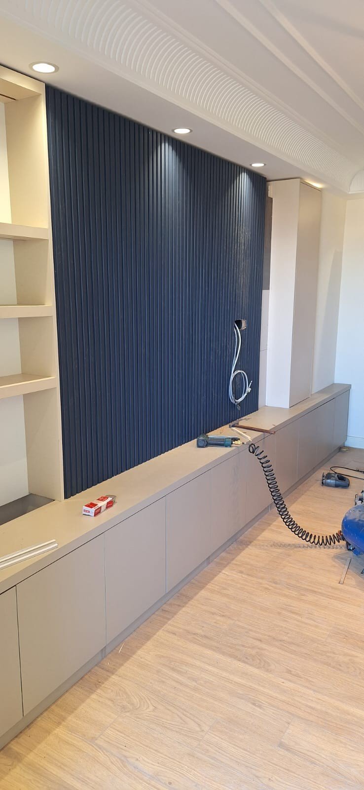
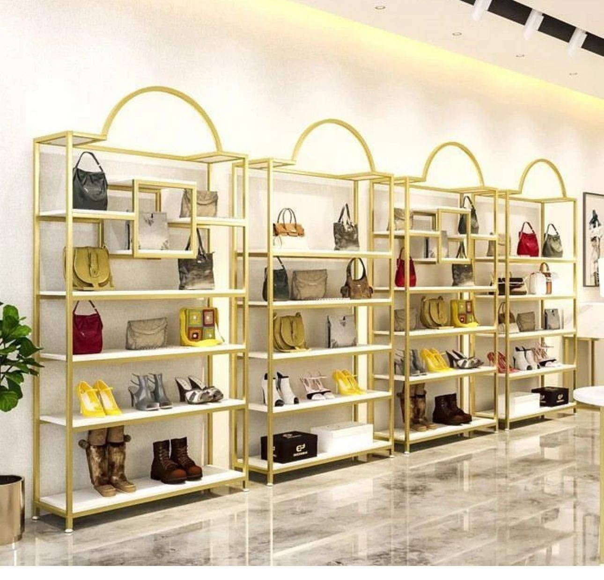
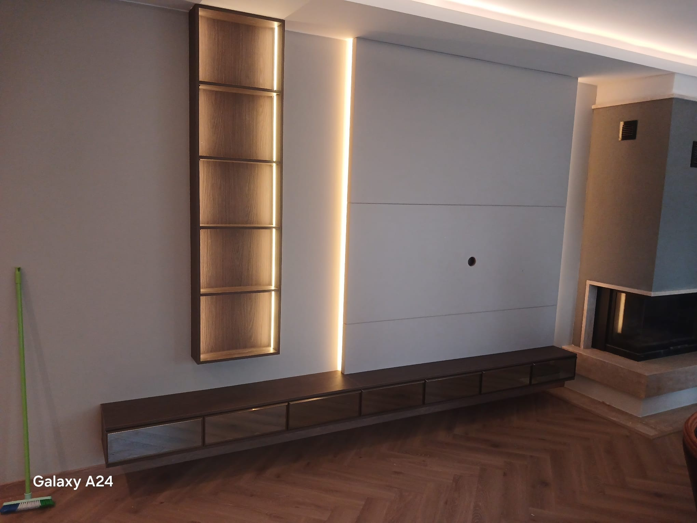
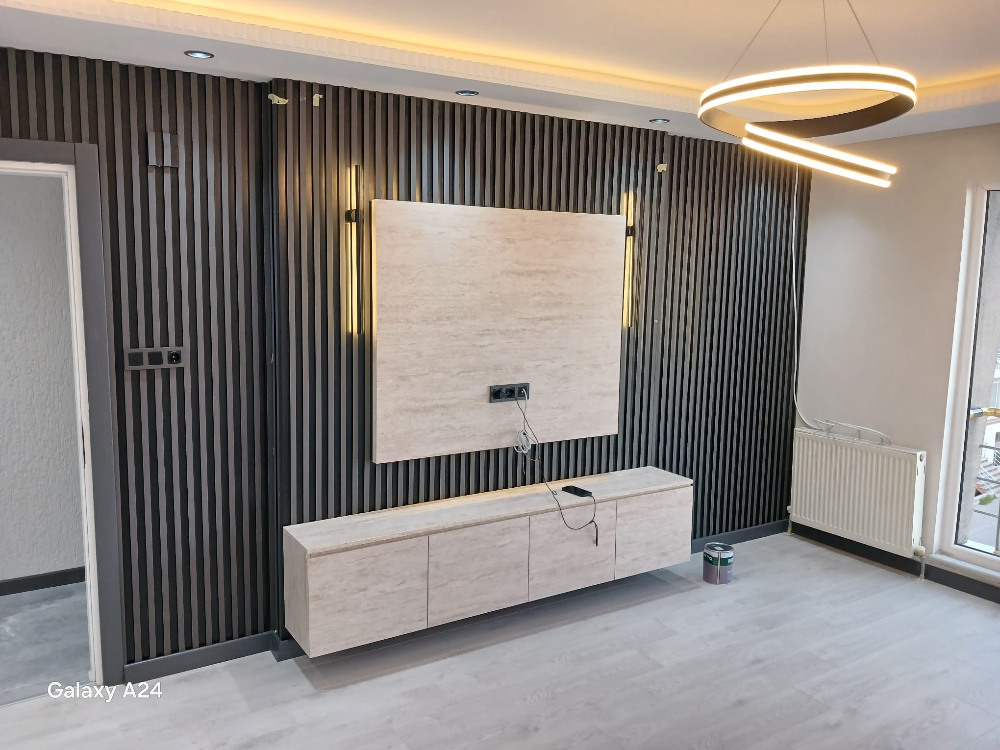

Mobilya iyi,
mekân bambaşka.
Türkiye ve Balkanlar’da ölçüye özel mobilya, mutfak, zemin ve iç mimarlık projelerini fikirden uygulamaya taşıyoruz.
tasarımla buluşan mekânlar
size özel
Fotoğrafınızı yükleyin.
Tasarım yönünüzü bulun.
Odanızın fotoğrafı ve beğendiğiniz stil ile kişisel bir konsept panosu hazırlayın. Fotoğrafınız bu tarayıcıda kalır.
İlham fotoğrafı cihazınızdan dışarı gönderilmez.
Bu, görsel stil ve malzeme yönü veren bir ilk konsept panosudur; yüklenen fotoğrafın yapay zekâ ile yeniden çizilmiş hâli veya uygulama projesi değildir.
Birlikte tasarlayalım.
Güzelce yaşayalım.
Tek bir oda, yepyeni bir ev ya da alışılmışın dışında bir fikir… İhtiyacınıza göre şekillenen tasarım ve uygulama çözümleri.

01Salon & oturma odası
Rahatlığı, renkleri ve size ait küçük detayları buluşturan yaşam alanları.
Mutfak & dolap
Akıllı depolama, iyi malzeme ve yalın çizgiler.

03Zemin döşeme
Dokuyu ve tonu mekânın bütününe uyumlu seçelim.

04Çocuk odası
Büyümeye alan açan, neşeli ve işlevli odalar.

05Ekstrem & özel projeler
“Böyle bir şey mümkün mü?” diye sorduğunuz yerde başlar.
İç mimarlık & özel tasarım
Keşif, konsept, malzeme ve mekâna özel tasarım desteği.
✳
Trendler gelir geçer.
Sizin hissettikleriniz
hep sizinle kalır.
Önce sizi dinliyoruz. Sonra günlük hayatınıza uyan planı, dokuyu ve renkleri birlikte keşfediyoruz. Sonuç: sadece güzel görünen değil, içinde iyi hissettiren bir mekân.
Tanışalım ↗Mekâna değerkatan tasarım
Fikirden mekâna.
Her proje yeni bir hikâye. Sizin hikâyeniz nasıl bir yerde yaşamak istiyor?


Fotoğraflar saha arşivinden seçilmiştir. Başlıklar görselde görülen alanı tarif eder; proje ve müşteri bilgisi içermez.
Tüm saha fotoğraflarını gör ＋
Mobilya detayları,
farklı ihtimaller.
Mustafa klasöründeki görseller logosuz sunum için düzenlenmiş 3D tasarım çalışmalarından seçilmiştir; tamamlanmış saha uygulaması olarak gösterilmez.
İşin akışını
videoda izleyin.
Mağaza, showroom, mutfak ve depolama mobilyalarının saha uygulama detaylarını ilgili alan başlığıyla izleyin.
Markanız için
ölçekte üretilebilir mobilya.
Mobilya markaları, yapı marketleri ve perakende ekipleriyle özel ürün, teşhir ünitesi, mağaza mobilyası ve tekrarlanabilir iç mekân çözümlerini değerlendirmeye açığız.
Bauhaus, IKEA ve benzeri markaların satın alma, kategori ve mağaza tasarım ekipleri; hedef ürün grubu, adet, teknik şartname ve teslimat bölgesini paylaşarak ön görüşme talep edebilir.
Kurumsal teklif görüşmesi başlatın ↗Anında fiyat
tahmini.
Proje türünü, alanı, malzeme tercihini ve uygulama ülkesini seçin. Kapsamı saniyeler içinde hazırlayıp ön değerlendirme talebinize ekleyin.
Ön aralık, proje kategorisi, seçilen kalite ve ülke katsayısıyla hesaplanır. Bu otomatik tahmin keşif ve resmi teklif yerine geçmez.
Gösterilen fiyat aralığı belirtilen m² birim fiyatları ve katsayılara dayalı yaklaşık tahmindir; keşif, nakliye, vergi, uygulama ve tedarik koşulları kesin teklifi değiştirebilir.
Güzel fikirler
sınır tanımaz.
Türkiye ve Avrupa’daki iç mekân projelerinizi birlikte değerlendirelim. Projenizin konumunu ve kapsamını paylaşın; size uygun çalışma şeklini konuşalım.
Nasıl ilerliyoruz?
Sizi dinliyoruz
İhtiyacınızı, beğenilerinizi, konumunuzu ve önceliklerinizi tanıyoruz.
Fikri şekillendiriyoruz
Kapsamı, tasarım yaklaşımını ve sonraki adımları birlikte netleştiriyoruz.
Mekâna hayat veriyoruz
Üzerinde anlaştığımız çözümü, belirlenen kapsam ve süreçte ilerletiyoruz.
Aklınızdaki
sorular.
Projenizle ilgili sorularınız mı var? İlk mesajınızda kısaca anlatın, birlikte değerlendirelim.
Hangi hizmetleri sunuyorsunuz?＋
İç mimarlık ve mekân tasarımı, mobilya ve dekorasyon, ölçüye özel mutfak ve dolap tasarımı, zemin döşeme, salon, oturma odası ve çocuk odası düzenlemeleri ile özel projeler üzerinde çalışıyoruz. Projenizin kapsamını ilk görüşmede netleştiriyoruz.
Avrupa ülkelerindeki projeler için çalışabilir miyiz?＋
Türkiye ve Avrupa’daki proje taleplerinizi değerlendiriyoruz. Konum, proje kapsamı ve ihtiyaç duyulan hizmeti paylaşın; uygun çalışma biçimini birlikte konuşalım.
Konfigüratör tahmini fiyatı nasıl hesaplıyor?＋
Tahmin; alan × kategori birim fiyatı × kalite çarpanı × ülke katsayısı üzerinden hesaplanır. Ekstrem kategoride 100 m² üzeri projelere ayrıca %10 danışmanlık payı eklenir. Sonuç yaklaşık aralıktır; kesin teklif ölçü ve kapsam incelemesinden sonra belirlenir.
İlk görüşme için hangi bilgileri paylaşmalıyım?＋
Proje konumu, düşündüğünüz alan veya oda, hedeflediğiniz değişiklik, yaklaşık zamanlama ve varsa ilham görselleri iyi bir başlangıç sağlar. Bütçeniz varsa belirtmeniz öneri kapsamını doğru şekillendirmeye yardımcı olur.
Sadece tasarım hizmeti alabilir miyim?＋
İhtiyaca göre tasarım odaklı destek veya tasarım ve uygulamayı kapsayan çalışma değerlendirilebilir. Kapsam ve hizmet uygunluğu ilk görüşmede netleştirilir.
Fiyat teklifi nasıl alabilirim?＋
Projenizin yeri, büyüklüğü ve ihtiyaçlarını kısaca anlatın. Bilgiler incelendikten sonra izlenecek kapsam ve teklif süreci sizinle paylaşılır.
Bir fikriniz mi
var?
Ne hayal ettiğinizi anlatın. İlk sohbetimizde projenizin ihtiyaçlarını ve olası sonraki adımları konuşalım.